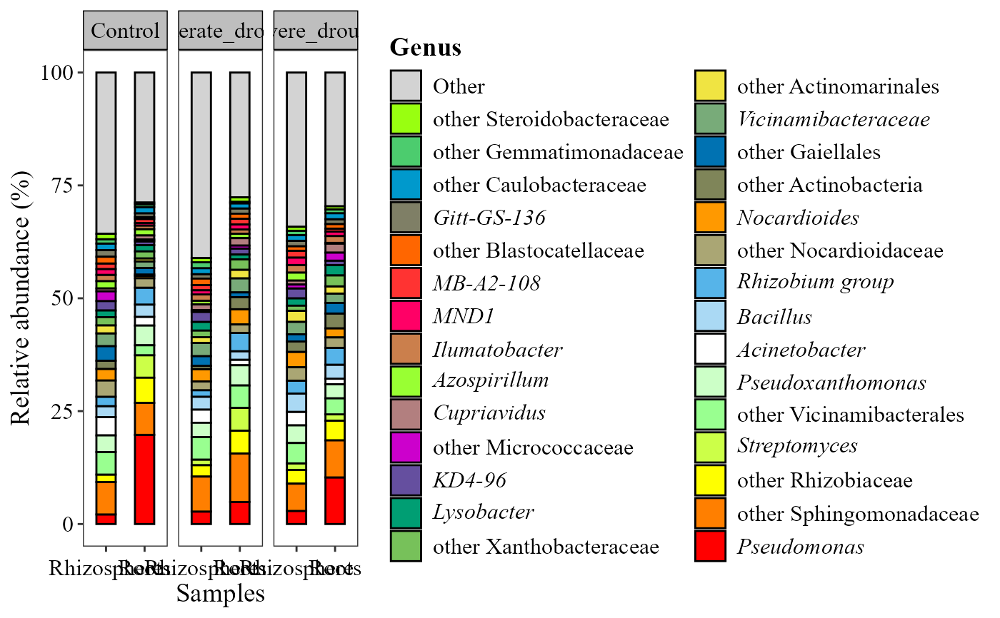

Generates a bar plot of relative abundance (%) for the most abundant taxa groups across samples or sample groups.
Usage
abundance_bar_plot(
table,
metadata = NULL,
taxonomy_db = "silva",
level = "genus",
x_col = NULL,
facet_by = NULL,
width_equal = FALSE,
label = "taxonomy",
top_n = 15,
x_axis_title = "Samples",
y_axis_title = "Relative abundance (%)",
x_label_angle = 0,
strip_text_bold = FALSE,
strip_color = "grey",
aspect_ratio = NULL,
add_remained = FALSE,
save_table = FALSE,
table_filename = "relative_abundance.txt"
)Arguments
- table
A data frame with taxa in rows and samples in columns. The last column must be named
taxonomy, containing full taxonomic strings.- metadata
A data frame containing sample metadata. Its first column must hold the sample IDs (the column names of
table). Optional: ifNULL(default), one bar is drawn per sample.- taxonomy_db
Character. Database the taxonomy strings come from:
"silva"(default),"gg2"(Greengenes2, also"gg"),"unite"or"Kraken2"(also"kraken"). Case-insensitive.- level
Character. Taxonomic level:
"kingdom","phylum","class","order","family","genus"(default) or"species". Case-insensitive.- x_col
Character. Name of the column in
metadatafor the x-axis. IfNULL(default), one bar per sample.- facet_by
Character. Name of the column in
metadatato facet the plot by. Optional;NULL(default) for no facets.- width_equal
Logical. If
TRUE, all bars have equal width regardless of sample count per group. DefaultFALSE.- label
Character. Title of the taxa legend. Default
"taxonomy".- top_n
Integer. Number of most abundant taxa to show. Default
15.- x_axis_title
Character. Title of the x-axis. Default
"Samples".- y_axis_title
Character. Title of the y-axis. Default
"Relative abundance (%)".- x_label_angle
Numeric. Rotation (degrees) of the x-axis labels. Default
0(horizontal); use45or90if they overlap.- strip_text_bold
Logical. If
TRUE, the facet strip labels are bold. DefaultFALSE.- strip_color
Character. Background color of the facet strips (used when
facet_byis set). Default"grey".- aspect_ratio
Numeric. Aspect ratio (height/width) of each panel. Default
NULL(automatic).- add_remained
Logical. If
TRUE, adds an "Other" category with the sum of the remaining taxa. DefaultFALSE.- save_table
Logical. If
TRUE, saves the relative-abundance table as a tab-delimited file. DefaultFALSE.- table_filename
Character. Name or path of the saved file (used when
save_table = TRUE). Default"relative_abundance.txt".
Details
Relative abundances are calculated per sample (%).
Taxa are collapsed to the taxonomic
level; taxa not resolved to that level are shown as "other". Only the top
top_ntaxa are shown; others are filtered out.Samples are grouped and ordered according to
x_col.Optional faceting by
facet_byif provided.Features assigned only to a kingdom/domain (e.g.
"d__Bacteria;__;__;__;__;__") or"Unassigned"are removed.
Examples
table_path <- system.file("extdata", "tabla_bacteria.txt", package = "MicroBioMeta")
table <- read.delim(table_path, row.names = 1, check.names = FALSE)
metadata_path <- system.file("extdata", "metadata_bacteria.txt", package = "MicroBioMeta")
metadata <- read.delim(metadata_path, check.names = FALSE)
abundance_bar_plot(
table = table,
metadata = metadata,
taxonomy_db = "silva",
level = "genus",
x_col = "Location",
label = "Genus",
facet_by = "Treatment",
top_n = 30,
add_remained = TRUE
)
